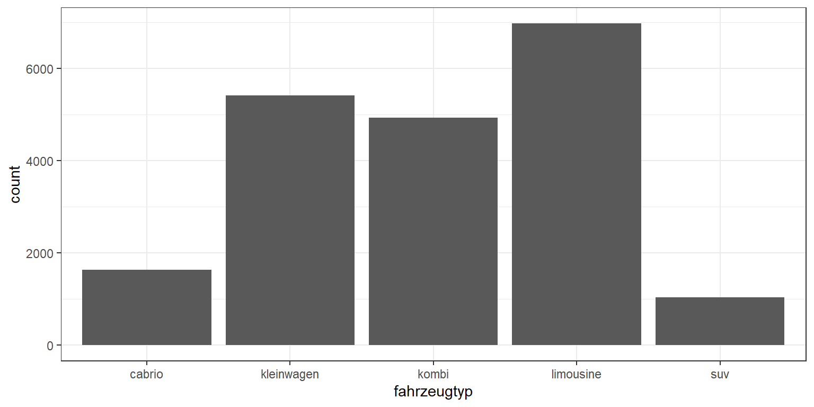
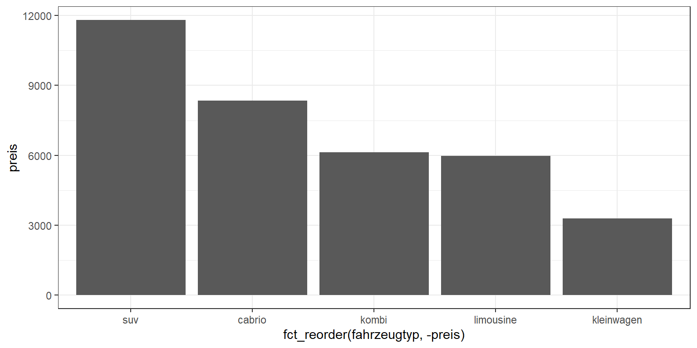

3 Aggregierte Daten
Das Thema Visualisierung von aggregierten Daten erschließen wir uns erneut anhand von Daten zu Gebrauchtwagenangeboten über Ebay Kleinanzeigen.
library(tidyverse)
theme_set(theme_bw())
df <- read_csv("data/gebrauchtwagen.csv")
glimpse(df)## Rows: 20,000
## Columns: 13
## $ name <chr> "smart_forTwo_Softtouch__passion_Inspektion_fuer_687_Euro_~
## $ preis <dbl> 5299, 1100, 8199, 8999, 3600, 2490, 15500, 2700, 6200, 279~
## $ alter <dbl> 7, 16, 14, 8, 13, 11, 7, 12, 8, 8, 22, 8, 9, 15, 16, 18, 1~
## $ kilometer <dbl> 30000, 125000, 150000, 150000, 150000, 150000, 150000, 900~
## $ hersteller <chr> "smart", "renault", "audi", "mercedes_benz", "bmw", "peuge~
## $ modell <chr> "fortwo", "clio", "a4", "c_klasse", "3er", "1_reihe", "5er~
## $ fahrzeugtyp <chr> "kleinwagen", "kleinwagen", "kombi", "limousine", "limousi~
## $ getriebe <chr> "automatik", "manuell", "automatik", "automatik", "manuell~
## $ ps <dbl> 71, 75, 131, 136, 116, 68, 177, 69, 125, 67, 115, 121, 129~
## $ kraftstoff <chr> "benzin", "benzin", "benzin", "diesel", "benzin", "diesel"~
## $ schaden <chr> "nein", "nein", "nein", "nein", "nein", "nein", "nein", "j~
## $ plz <dbl> 35315, 36137, 85057, 10627, 65934, 14793, 28816, 30880, 71~
## $ bundesland <chr> "Hessen", "Hessen", "Bayern", "Berlin", "Hessen", "Branden~Bis hierhin haben wir hauptsächlich Rohdaten visualisiert. Nun wollen wir hingegen die Rohdaten auf eine höhere Ebene aggregieren und diese Ergebnisse visualisieren, z.B:
- Anzahl Autos je Fahrzeugtyp (SUV, Cabrio, Kleinwagen, etc)
- Durchschnittlicher Preis je Hersteller
data <- df %>%
group_by(fahrzeugtyp) %>%
summarise(n = n(), preis = mean(preis))
data## # A tibble: 5 x 3
## fahrzeugtyp n preis
## <chr> <int> <dbl>
## 1 cabrio 1639 8342.
## 2 kleinwagen 5418 3288.
## 3 kombi 4938 6130.
## 4 limousine 6974 5971.
## 5 suv 1031 11800.Der wichtigste Grafiktyp für diese Art von Daten ist das Balkendiagramm (Bar chart), welches wir über das geometrische Object geom_col erezugen können.
data %>% ggplot(aes(x = fahrzeugtyp, y = n)) + geom_col()Eine praktische Alternative zu geom_col ist geom_bar, jedoch noch für den Fall, dass die Anzahl der Beobachtungen dargestellt werden soll. Die Funktion geom_bar kann direkt auf die Rohdaten angewendet werden. Hierbei wird das Zählen der Fälle implizit durch die Funktion ausgeführt und muss nicht explizit per Code berechnet werden.
df %>% ggplot(aes(x = fahrzeugtyp)) + geom_bar()
3.1 Sortierung
Ein typisches Problem ist, dass eine Text-Variable (character) wie fahrzeugtyp zunächst einmal nur alfabetisch sortiert werden kann. Für eine bessere Interpretierbarkeit ist es jedoch meistens sinnvoll, die Balken sortiert nach ihrer Höhe anzuordnen. Dafür müssen wie die Text-Variable in eine sogenannte Faktor-Variable (factor) umwandenln. Faktoren lassen sich nach unterschiedlichsten Kriterien sortieren, bspw. über die Funktion fct_reorder.
data %>% ggplot(aes(x = fct_reorder(fahrzeugtyp, -preis), y = preis)) + geom_col()
3.2 Überlappungen
Eine weitere typische Schwierigkeit besteht in sich überlappenden Labels. Dieses Problem tritt insbesondere auf der x-Achse auf. Deshalb lohnt es sich, die Achsenzuordnung zu ändern und so ein horizontales Balkendiagramm zu erzeugen.
# Map to y axis
data <- df %>%
group_by(bundesland) %>%
summarise(n = n(),
preis = mean(preis))
data %>% ggplot(aes(x = bundesland, y = preis)) + geom_col()
data %>% ggplot(aes(y = bundesland, x = preis)) + geom_col()
Eine weitere Möglichkeit besteht darin, mehrere kleinere Balken zu einem großen Balken für “Sonstige” zusammenzufassen.
df %>% ggplot(aes(y = fct_lump(bundesland, n= 5))) + geom_bar()
3.3 Zwei kategoriale Variablen
Wenn wir die aggregierten Statistiken nicht für eine sondern zwei kategorielle Variablen berechnen (bspw. für bundesland und fahrzeugtyp), gibt es mehrere denkbare Darstellungsformen.
Eine Heatmap via geom_tile eignet sich insbesondere, wenn die kategorialen Variablen viele Ausprägungen haben, so wie es hier der Fall ist.
df %>% count(bundesland, fahrzeugtyp) %>% ggplot() +
geom_tile(aes(x = fahrzeugtyp, y = bundesland, fill = n), color = "white") +
geom_text(aes(x = fahrzeugtyp, y = bundesland, label = n), size = 3) +
scale_fill_binned(low = "white", high = "red")
Facetten-Plots können grundsätzlich auch für solche Fälle helfen. Im hier vorliegenden Fall, mit vielen Ausprägungen wird ein Facettenplot aber schnell unübersichtlich.
df %>%
count(bundesland, fahrzeugtyp) %>%
ggplot() +
geom_col(aes(y = fahrzeugtyp, x = n)) +
facet_wrap(~bundesland, scales = "free")